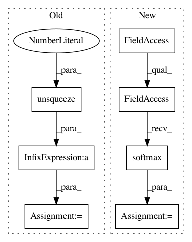

636c1cff7a91c0b54c996ef48b36274b08e4a8b8,models.py,YOLOLayer,forward,#YOLOLayer#Any#Any#Any#,110
Before Change
// Broadcasting only supported on first dimension in CoreML. See onnx-coreml/_operators.py
// p_cls = F.softmax(p_cls, 2) * p_conf // SSD-like conf
p_cls = torch.exp(p_cls).permute((2, 1, 0))
p_cls = p_cls / p_cls.sum(0).unsqueeze(0) * p_conf.permute((2, 1, 0)) // F.softmax() equivalent
p_cls = p_cls.permute(2, 1, 0)
return torch.cat((xy / ngu, wh, p_conf, p_cls), 2).squeeze().t()
After Change
xy = torch.sigmoid(p[..., 0:2]) + grid_xy[0] // x, y
wh = torch.exp(p[..., 2:4]) * anchor_wh[0] // width, height
p_conf = torch.sigmoid(p[:, 4:5]) // Conf
p_cls = F.softmax(p[:, 5:85], 1) * p_conf // SSD-like conf
return torch.cat((xy / ngu[0], wh, p_conf, p_cls), 1).t()
// p = p.view(1, -1, 5 + self.nc)
In pattern: SUPERPATTERN
Frequency: 3
Non-data size: 7
Instances
Project Name: ultralytics/yolov3
Commit Name: 636c1cff7a91c0b54c996ef48b36274b08e4a8b8
Time: 2019-08-11
Author: glenn.jocher@ultralytics.com
File Name: models.py
Class Name: YOLOLayer
Method Name: forward
Project Name: ixaxaar/pytorch-dnc
Commit Name: a6667bf98c59a7447a6bc55869459e83f5bdb603
Time: 2017-12-07
Author: root@ixaxaar.in
File Name: dnc/sparse_memory.py
Class Name: SparseMemory
Method Name: read_from_sparse_memory
Project Name: mozilla/TTS
Commit Name: 7e020d40845bd662823393afe2f9eda53c8d953b
Time: 2019-01-16
Author: egolge@mozilla.com
File Name: layers/attention.py
Class Name: AttentionRNNCell
Method Name: forward